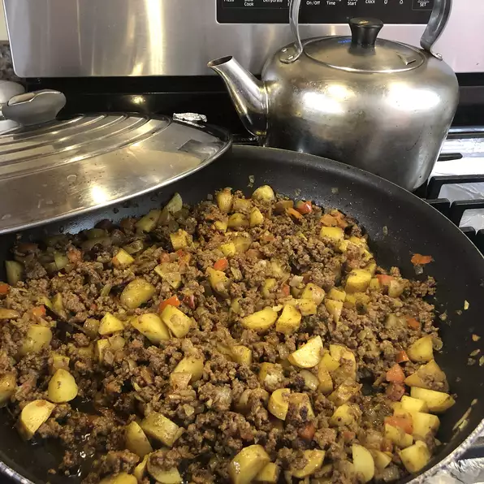

Desi beef keema recipe

South Asian-Style Ground Beef (Keema)
Simple desi (South Asian) recipe.
Ingredients
- 2 tablespoons butter, or more to taste
- 2 onions, diced
- 1 clove garlic, minced
- 1 ½ tablespoons curry powder
- 2 ½ teaspoons salt
- 1 teaspoon ground turmeric
- 1 teaspoon cayenne pepper
- ½ teaspoon ground black pepper
- ¼ teaspoon ground ginger
- ½ cinnamon stick
- 1 pound ground beef
- 2 potatoes, diced
- 2 tomatoes, diced
Method
- Melt butter in a large wok or skillet over high heat; saute onions and garlic until onions are almost transparent, about 5 minutes.
- Combine curry powder, salt, turmeric, cayenne pepper, black pepper, ginger, and cinnamon in a bowl.
- Stir ground beef into onion mixture and cook, breaking beef into small crumbles, until beef is cooked through and browned, 5 to 7 minutes. Add curry mixture to ground beef mixture and stir well.
- Mix potatoes and tomatoes into ground beef mixture, reduce heat to medium, cover wok, and cook until potatoes are tender, about 20 minutes.